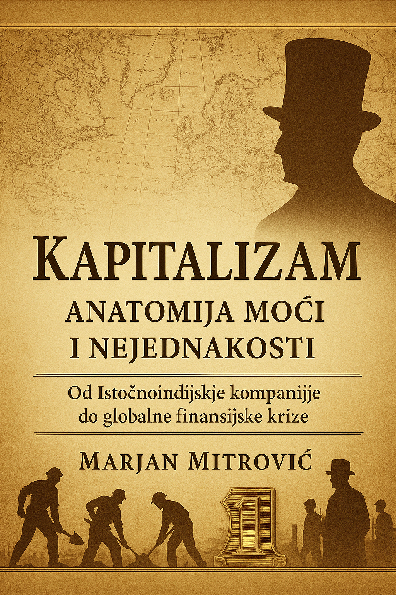

Knjiga predstavlja višeslojnu analizu kapitalizma kao istorijskog, ekonomskog i političkog sistema. Polazeći od kolonijalnih korena i uspona trgovačkih kompanija, prati se transformacija kapitalizma kroz industrijsku revoluciju, uspon finansijskog sektora i savremeni globalni poredak.
Kombinujući istorijsku analizu, ekonomsku teoriju i političku filozofiju, tekst pokazuje kako koncentracija kapitala preoblikuje društva, potiskuje srednju klasu i normalizuje krizu kao trajno stanje sistema.